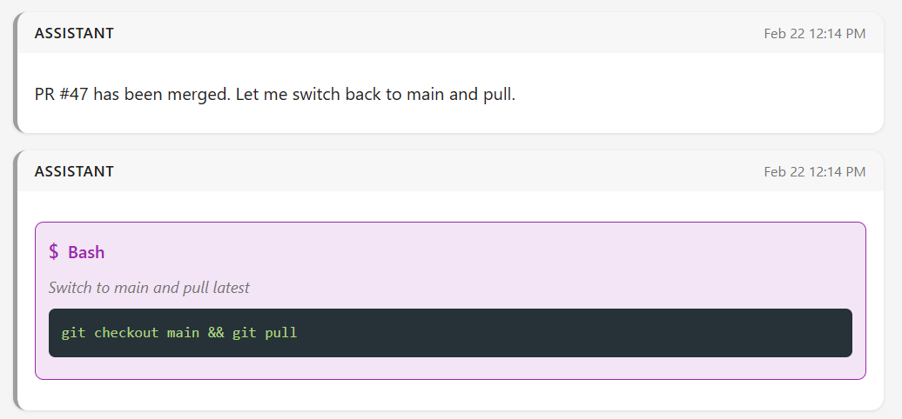

David Boreham, March 9, 2026
Something I see often in online comments, and also voiced several times at a conference I attended recently is that: LLMs are "not deterministic". I had always assumed these comments referred to phenomenon that had become highlighted a few months back, to do with model temperature and other fancy effects such as GPU task concurrency. I'll call these effects: the regular kinds of nondeterminism.
But after using Claude Code extensively to assist me on larger software projects, I began to wonder if at least some of the time those people had been complaining about something different. I'd seen it too, I thought, and although it didn't bother me I think it could be quite frustrating for anyone who wants to use LLMs in some sort of user-facing application. Here's a clear example: in developing the Occam transpiler project I had asked Claude to open a large number of bug reports (aka "Issues"). Then I asked Claude to look at each report in turn, determine a suitable fix, then for each one I asked Claude to create a PR. I reviewed each PR and told Claude to go ahead and merge to main. Ok here's the key insight: in about 1/2 of the sessions, where as you'll recall I was asking Claude to do exactly the same thing in terms of "fix bug then make a PR then merge it", after merging Claude switched back to the main branch and re-pulled from the Git server, like this:

Typically a developer would do that because the PR branch is effectively dead after merging, and you'd want to be on main to begin the next fix. But I never actually asked Claude to switch back to the main branch. I only asked for the PR to be merged. And of course in the other 1/2 of cases Claude didn't do that. It left the git context on the PR branch, like this. In exhibiting either behavior Claude had done what I'd asked. But if you were someone trying to create an agent application that fixes bugs in a software project this seemingly capricious behavior would I can imagine be frustrating. Of course you could arrange for the session prompt to include something like "when you've coded a fix for the issue create a PR then merge it after approval then switch back to the main branch and re-pull". But how do we know what will be Claude's "SOP" for any task? We really don't, which is ok when a human is checking its work but tricky for scenarios where it's intended to not have human guidance, or at least no guidance from a human skilled in the field.What causes this type of "apparent nondeterminism" in LLMs? Presumably just slight differences in context that end up putting the model through a slightly different set of states. The "switch back to main" discipline is perhaps not sufficiently prevalent in training data to make it a certainty in model output when a PR is merged. Perhaps there are "model debuggers" that can be used to diagnose the cause?